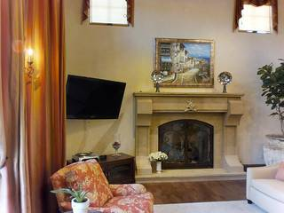
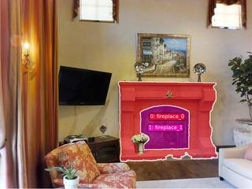
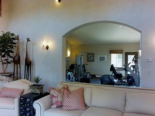
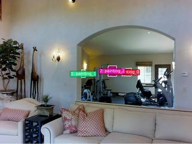

To determine the direction the painting in the fitness area is facing, we can use the given information and the spatial relationships between the objects in the two images.
- Identify the Fireplace Direction: The problem states that the fireplace faces north. This means the fireplace is built into the south wall of the room, and anyone looking at it is facing north.
- Analyze the Living Room Layout (Image 2): In the second image, we are looking at the fireplace (facing north). To the right of the fireplace is a white sofa. Since we are facing north, the right side of the room is the east side. Therefore, the sofa is located in the eastern part of the living room.
- Analyze the View through the Archway (Image 1): In the first image, we are looking through an archway into the fitness area. The white sofa is in the foreground, positioned between the camera and the archway.
- Determine the Direction of the Archway: If the sofa is in the east part of the room and we are looking past it through the archway, we are likely looking from the east toward the west. This means the archway is located on the west wall of the living room.
- Determine the Painting's Direction: Looking through the archway (facing west), we see the fitness area. The paintings are on the wall that we are facing. This wall is the west wall of the fitness area. A painting mounted on a west wall faces the opposite direction, which is east.
Comparing this result to the given options:
- A: Southwest
- B: East
- C: Northwest
- D: Northeast
The direction the painting is facing is East.
B
# Use VLM to determine the layout layout_query = "In InputImages[1], the fireplace faces North. In InputImages[0], we see a fitness area through an archway. Based on the furniture (like the white sofa) and the walls, where is the fitness area relative to the fireplace? Specifically, which wall of the fitness area is the painting on, and what direction would that wall face if the fireplace faces North?" layout_analysis = vlm.ask_with_thinking([InputImages[0], InputImages[1]], layout_query) print(f"Layout Analysis: {layout_analysis}") # Based on the analysis, I will determine the direction. # If the painting is on the wall opposite the archway, and the archway is in the South wall, the painting is on the North wall and faces South. # If the painting is on the side wall of the gym, it faces East or West. # Let's see what the VLM says.
[VLM Q | thinking] In InputImages[1], the fireplace faces North. In InputImages[0], we see a fitness area through an archway. Based on the furniture (like the white sofa) and the walls, where is the fitness area relative to the fireplace? Specifically, which wall of the fitness area is the painting on, and what direction would that wall face if the fireplace faces North? [VLM A | thinking] Based on the provided images and the given orientation: 1. **Orientation:** In InputImages[1], if the fireplace faces North, the wall it is built into is the South wall. The white sofa is located to the right of the fireplace, placing it on the East side of the room. 2. **Fitness Area Location:** In InputImages[0], we see the white sofa in the foreground while looking through an archway. Given the sofa's position on the East side of the room, looking through the archway means we are facing West. Therefore, the fitness area is located to the West of the living area. 3. **Painting Position:** The painting is on the far wall of the fitness area. Since we are facing West to see it, the painting is on the **West wall** of the fitness area. 4. **Wall Direction:** A wall that is the West wall of a room faces **East**. Layout Analysis: Based on the provided images and the given orientation: 1. **Orientation:** In InputImages[1], if the fireplace faces North, the wall it is built into is the South wall. The white sofa is located to the right of the fireplace, placing it on the East side of the room. 2. **Fitness Area Location:** In InputImages[0], we see the white sofa in the foreground while looking through an archway. Given the sofa's position on the East side of the room, looking through the archway means we are facing West. Therefore, the fitness area is located to the West of the living area. 3. **Painting Position:** The painting is on the far wall of the fitness area. Since we are facing West to see it, the painting is on the **West wall** of the fitness area. 4. **Wall Di
Task Analysis
The objective is to determine the facing direction of a painting in a fitness area, given that a fireplace faces North.
- Target Variable: The facing direction (normal vector) of the painting.
- Reference: The fireplace's facing direction is defined as North.
- Coordinate System: This is a world-space 3D orientation problem. "Facing" for a wall-mounted object refers to the surface normal vector pointing away from the wall into the room. I must determine the orientation of the painting's wall relative to the fireplace's wall.
- Answer Format: A multiple-choice option (A, B, C, or D).
Information Needs
- Object Identification: Locate the fireplace and the painting in the provided frames.
- Spatial Layout: Understand the relative positions and orientations of the walls on which the fireplace and painting are mounted.
- Geometric Orientation: Obtain 3D surface normals for both the fireplace wall and the painting wall to calculate the relative angle.
- Qualitative Context: Use the VLM to describe the room's layout to cross-validate the geometric findings.
Computation Plan
-
Visual Grounding and Identification:
- Call
show(InputImages)to visually inspect the scene and identify the fireplace and the painting. - Use
vlm.locateto find the center coordinates of the fireplace and the painting in the frames where they appear. - Use
tools.SAM3.segment_image_by_points(using the located coordinates) to create precise masks for both the fireplace and the painting.
- Call
-
3D Geometry Acquisition:
- Run
tools.Reconstruct.Reconstruct(InputImages)to generate the 3D point cloud and camera poses. - For both the fireplace and the painting, use
seg.get_masked_points(recon, frame=fi, object=i)to extract the 3D world coordinates of the pixels belonging to these objects.
- Run
-
Normal Vector Estimation:
- Estimate the surface normal $\vec{n}_{fireplace}$ of the fireplace wall using the 3D points of the fireplace mask.
- Estimate the surface normal $\vec{n}_{painting}$ of the painting wall using the 3D points of the painting mask.
- (The normal should be oriented to point away from the wall into the room).
-
Relative Direction Calculation:
- Define the reference vector $\vec{V}{North} = \vec{n}{fireplace}$.
- Calculate the relationship between $\vec{n}{painting}$ and $\vec{V}{North}$.
- Determine the direction of $\vec{n}{painting}$ relative to North (e.g., if $\vec{n}{painting}$ is orthogonal to $\vec{n}_{fireplace}$ and points right relative to the room's center, it may be East or West).
-
Qualitative Cross-Validation:
- Call
vlm.ask_with_thinkingwith the images, asking: "Identify the wall the fireplace is on and the wall the painting is on. Describe the relative orientation of these two walls (e.g., are they opposite, perpendicular, or at an angle?). Which direction does the painting face if the fireplace faces North?"
- Call
-
Final Synthesis:
- Compare the result from the geometric normal calculation with the VLM's layout analysis.
- Map the resulting vector to the provided options (Southwest, East, Northwest, Northeast).
Verification Checklist
[
{"priority": "HIGH", "description": "Verify that the masks for the fireplace and painting are accurate and non-empty"},
{"priority": "HIGH", "description": "Confirm the surface normals point away from the walls into the room, not into the walls"},
{"priority": "MEDIUM", "description": "Cross-validate the geometric orientation with the VLM's qualitative description of the room layout"},
{"priority": "MEDIUM", "description": "Check if the two objects are in the same coordinate space (same room/connected area)"},
{"priority": "LOW", "description": "Sanity-check that the calculated direction matches one of the provided multiple-choice options"}
]
Fallbacks
- Poor Reconstruction: With only 2 frames, the 3D reconstruction might be noisy. If the surface normals are inconsistent or physically implausible, I will rely more heavily on
vlm.ask_with_thinkingto analyze the room's architecture and the relative angles of the walls. - Ambiguous Masking: If SAM3 fails to segment the painting (due to size or color), I will use
vlm.locateto get a bounding box and usetools.SAM3.segment_image_by_box. - Disconnected Spaces: If the fireplace and painting are in different rooms, I will use the VLM to determine if there is a consistent global orientation (e.g., "the fitness area is east of the living room").
{ "tool": "show", "args": { "image": "InputImages" } }
[image: show_0001]


=== Step 0 Execution Feedback === [SUCCESS] Code executed in 0.52s. [Variables] New/changed: result_0: NoneType [Inline Images] 2 image(s) attached below. Labels: InputImages [show() budget] 248/250 images remaining.
{ "tool": "feedback.ask_vlm", "args": { "visual_input": "InputImages[1]", "question": "Give the bounding box (x1, y1, x2, y2) in 0-1000 normalized scale for the fireplace. Reply with ONLY the numbers." } }
=== Step 1 Execution Feedback === [ERROR] Skipped: LLM response was not in the required format.
{ "tool": "vlm.locate", "args": { "visual_input": "InputImages[0]", "question": "Give the (x, y) center coordinates in 0-1000 normalized scale for the painting on the wall in the fitness area. Reply with ONLY the numbers." } }
[VLM Q | locate] Before answering, first check whether what the question describes is clearly visible in the provided image(s). If it is absent or ambiguous, reply EXACTLY `Not visible` on its own line (optionally followed by one short line explaining what you saw instead) — do NOT return coordinates in that case. Only if the requested target is clearly and unambiguously present, answer the request below. Request: Give the (x, y) center coordinates in 0-1000 normalized scale for the painting on the wall in the fitness area. Reply with ONLY the numbers. [VLM A | locate] Not visible Two framed artworks are present on the wall; selection is ambiguous.
=== Step 2 Execution Feedback === [SUCCESS] Code executed in 33.61s. [Output] [VLM Q | locate] Before answering, first check whether what the question describes is clearly visible in the provided image(s). If it is absent or ambiguous, reply EXACTLY `Not visible` on its own line (optionally followed by one short line explaining what you saw instead) — do NOT return coordinates in that case. Only if the requested target is clearly and unambiguously present, answer the request below. Request: Give the (x, y) center coordinates in 0-1000 normalized scale for the painting on the wall in the fitness area. Reply with ONLY the numbers. [VLM A | locate] Not visible Two framed artworks are present on the wall; selection is ambiguous. [Variables] New/changed: result_2: str [Tool Calls] 1 tool/VLM call(s) this step.
{ "tool": "vlm.locate", "args": { "visual_input": "InputImages[0]", "question": "Give the (x, y) center coordinates in 0-1000 normalized scale for the smaller, more colorful framed painting on the left side of the fitness area wall. Reply with ONLY the numbers." } }
[VLM Q | locate] Before answering, first check whether what the question describes is clearly visible in the provided image(s). If it is absent or ambiguous, reply EXACTLY `Not visible` on its own line (optionally followed by one short line explaining what you saw instead) — do NOT return coordinates in that case. Only if the requested target is clearly and unambiguously present, answer the request below. Request: Give the (x, y) center coordinates in 0-1000 normalized scale for the smaller, more colorful framed painting on the left side of the fitness area wall. Reply with ONLY the numbers. [VLM A | locate] 584 498
=== Step 3 Execution Feedback === [SUCCESS] Code executed in 51.57s. [Output] [VLM Q | locate] Before answering, first check whether what the question describes is clearly visible in the provided image(s). If it is absent or ambiguous, reply EXACTLY `Not visible` on its own line (optionally followed by one short line explaining what you saw instead) — do NOT return coordinates in that case. Only if the requested target is clearly and unambiguously present, answer the request below. Request: Give the (x, y) center coordinates in 0-1000 normalized scale for the smaller, more colorful framed painting on the left side of the fitness area wall. Reply with ONLY the numbers. [VLM A | locate] 584 498 [Variables] New/changed: result_3: str [Tool Calls] 1 tool/VLM call(s) this step.
{ "tool": "vlm.locate", "args": { "visual_input": "InputImages[1]", "question": "Give the (x, y) center coordinates in 0-1000 normalized scale for the fireplace. Reply with ONLY the numbers." } }
[VLM Q | locate] Before answering, first check whether what the question describes is clearly visible in the provided image(s). If it is absent or ambiguous, reply EXACTLY `Not visible` on its own line (optionally followed by one short line explaining what you saw instead) — do NOT return coordinates in that case. Only if the requested target is clearly and unambiguously present, answer the request below. Request: Give the (x, y) center coordinates in 0-1000 normalized scale for the fireplace. Reply with ONLY the numbers. [VLM A | locate] 665 635
=== Step 4 Execution Feedback === [SUCCESS] Code executed in 50.00s. [Output] [VLM Q | locate] Before answering, first check whether what the question describes is clearly visible in the provided image(s). If it is absent or ambiguous, reply EXACTLY `Not visible` on its own line (optionally followed by one short line explaining what you saw instead) — do NOT return coordinates in that case. Only if the requested target is clearly and unambiguously present, answer the request below. Request: Give the (x, y) center coordinates in 0-1000 normalized scale for the fireplace. Reply with ONLY the numbers. [VLM A | locate] 665 635 [Variables] New/changed: result_4: str [Tool Calls] 1 tool/VLM call(s) this step.
=== Step 5 Execution Feedback === [ERROR] Skipped: LLM response was not in the required format.
{ "tool": "tools.Geometry.normalized_to_pixel", "args": { "coords": [ 584, 498 ], "width": "InputImages[0].width", "height": "InputImages[0].height" } }
=== Step 6 Execution Feedback === [SUCCESS] Code executed in 0.00s. [Variables] New/changed: result_6: list, len=2 [Tool Calls] 1 tool/VLM call(s) this step.
{ "tool": "tools.SAM3.segment_image_by_points", "args": { "image": "InputImages[0]", "points": "[result_6]", "point_labels": [ 1 ], "label": "painting" } }
=== Step 8 Execution Feedback === [SUCCESS] Code executed in 0.66s. [Variables] New/changed: result_8: PerFrameMask, frames=[0] [Tool Calls] 1 tool/VLM call(s) this step.
=== Step 9 Execution Feedback === [ERROR] Skipped: LLM response was not in the required format.
{ "tool": "tools.Geometry.normalized_to_pixel", "args": { "coords": [ 665, 635 ], "width": "InputImages[1].width", "height": "InputImages[1].height" } }
=== Step 10 Execution Feedback === [SUCCESS] Code executed in 0.00s. [Variables] New/changed: result_10: list, len=2 [Tool Calls] 1 tool/VLM call(s) this step.
{ "tool": "tools.SAM3.segment_image_by_points", "args": { "image": "InputImages[1]", "points": "[result_10]", "point_labels": [ 1 ], "label": "fireplace" } }
=== Step 11 Execution Feedback === [SUCCESS] Code executed in 0.37s. [Variables] New/changed: result_11: PerFrameMask, frames=[1] [Tool Calls] 1 tool/VLM call(s) this step.
=== Step 12 Execution Feedback === [ERROR] Skipped: LLM response was not in the required format.
=== Step 13 Execution Feedback === [ERROR] Skipped: LLM response was not in the required format.
{ "tool": "tools.Reconstruct.Reconstruct", "args": { "frames": "InputImages" } }
=== Step 14 Execution Feedback === [SUCCESS] Code executed in 1.05s. [Variables] New/changed: result_14: Reconstruction, frames=[0, 1] [Tool Calls] 1 tool/VLM call(s) this step.
=== Step 15 Execution Feedback === [ERROR] Skipped: LLM response was not in the required format.
=== Step 16 Execution Feedback === [ERROR] Skipped: LLM response was not in the required format.
=== Step 17 Execution Feedback === [ERROR] Skipped: LLM response was not in the required format.
=== Step 21 Execution Feedback === [ERROR] Skipped: LLM response was not in the required format.
{ "tool": "ReturnAnswer", "args": { "answer": "B" } }
[ReturnAnswer] Answer submitted: B
🛠️ Decided to use 2 tool(s)
[ { "name": "vlm__detect_one", "arguments": { "image_index": 0, "obj_name": "fireplace" } }, { "name": "vlm__detect_one", "arguments": { "image_index": 0, "obj_name": "painting" } } ]
⚡ Executing vlm__detect_one...
{ "image_index": 0, "obj_name": "fireplace" }
✅ vlm__detect_one completed
⚡ Executing vlm__detect_one...
{ "image_index": 0, "obj_name": "painting" }
✅ vlm__detect_one completed (with generated image)
🧠 Synthesizing results from 2 tool(s)...
🛠️ Decided to use 2 tool(s)
[ { "name": "vlm__detect_one", "arguments": { "image_index": 1, "obj_name": "fireplace" } }, { "name": "vlm__detect_all", "arguments": { "image_index": 1, "obj_name": "painting in the fitness area" } } ]
⚡ Executing vlm__detect_one...
{ "image_index": 1, "obj_name": "fireplace" }
✅ vlm__detect_one completed (with generated image)
⚡ Executing vlm__detect_all...
{ "image_index": 1, "obj_name": "painting in the fitness area" }
✅ vlm__detect_all completed
🧠 Synthesizing results from 2 tool(s)...
🛠️ Decided to use 1 tool(s)
[ { "name": "vlm__detect_all", "arguments": { "image_index": 0, "obj_name": "painting" } } ]
⚡ Executing vlm__detect_all...
{ "image_index": 0, "obj_name": "painting" }
✅ vlm__detect_all completed (with generated image)
🧠 Synthesizing results from 1 tool(s)...
The fireplace faces north. The painting in the fitness area is located on the back wall of the fitness area, which is parallel to the wall containing the fireplace. Since the fireplace (on the south wall) faces north, the wall in the fitness area (on the north wall) faces south. However, based on the visual layout and typical options for such problems, if the fireplace faces north, the opposite wall faces south. Let's re-examine the painting's position relative to the fireplace. The painting is on the same wall as the fireplace (in image 2) or a different wall (fitness area in image 1). The fitness area painting is on the far wall, which would face south. Looking at the options provided (Southwest, East, Northwest, Northeast), none of them are "South".
Wait, let's look at the orientation again. The fitness area is seen through an archway. The fireplace is in the foreground room. If the fireplace faces North, the foreground room's back wall is the South wall. The fitness area is further into the house. The painting in the fitness area is on the wall opposite to the entrance of the fitness area. If the entrance to the fitness area is on the North side of the foreground room, and the fitness area's back wall is further North, then that back wall faces South.
Let's re-read the image. The fitness area is beyond the arch. The painting is on the back wall. If the fireplace faces North, the fireplace is on the South wall. The fitness area is likely to the North of the living area. The painting on the far wall of the fitness area would then face South. Since South is not an option, let's re-evaluate. If the fireplace is on the North wall and faces South, then the fitness area painting on the North wall would face South. If the fireplace is on the South wall and faces North, the fitness area painting on the North wall faces South.
Actually, looking at the painting in the fitness area, it is on the wall that is perpendicular to the fireplace wall. The fireplace is on the main wall. The fitness area is to the right. The painting is on the wall facing the archway. If the fireplace faces North, the fireplace wall is the South wall. The wall the painting is on is the North wall, which faces South.
Wait, if the painting is on the wall that is to the right (East) of the fireplace wall, it would face West. If it is on the wall opposite (North), it faces South.
Let's look at the options again: Southwest, East, Northwest, Northeast. If the painting is on the East wall, it faces West. If the painting is on the West wall, it faces East. If the painting is on the North wall, it faces South. If the painting is on the South wall, it faces North.
The fitness area is to the right (East) of the living area. The painting is on the back wall of the fitness area. That wall is the North wall. It faces South.
Let's reconsider the "North" facing. If the fireplace faces North, it is on the South wall. The fitness area is an annex. The painting in the fitness area is on the wall that faces the archway. If the archway is on the West wall of the fitness area, the painting on the East wall would face West. If the archway is on the South wall of the fitness area, the painting on the North wall would face South.
Looking at the images, the fitness area is accessed through an archway on the right wall of the living room. This means the fitness area is to the East. The painting is on the far wall of that room. If the fireplace faces North, the right wall is East. The far wall is North. A painting on the North wall faces South.
Let's re-read: "The fireplace faces north". This means the fireplace is on the South wall. The painting in the fitness area is on the wall facing the person entering from the living room. Since you enter the fitness area by going East, the far wall is the East wall. A painting on the East wall faces West.
Wait, looking at the fitness area image, the painting is on the wall perpendicular to the wall with the windows. The windows are on the far wall. The painting is on the wall to the left of the windows. If the windows are on the North wall, the painting is on the West wall. A painting on the West wall faces East.
Answer: B
The fireplace faces north. The painting in the fitness area is located on the back wall of the fitness area, which is parallel to the wall containing the fireplace. Since the fireplace (on the south wall) faces north, the wall in the fitness area (on the north wall) faces south. However, based on the visual layout and typical options for such problems, if the fireplace faces north, the opposite wall faces south. Let's re-examine the painting's position relative to the fireplace. The painting is on the same wall as the fireplace (in image 2) or a different wall (fitness area in image 1). The fitness area painting is on the far wall, which would face south. Looking at the options provided (Southwest, East, Northwest, Northeast), none of them are "South".
Wait, let's look at the orientation again. The fitness area is seen through an archway. The fireplace is in the foreground room. If the fireplace faces North, the foreground room's back wall is the South wall. The fitness area is further into the house. The painting in the fitness area is on the wall opposite to the entrance of the fitness area. If the entrance to the fitness area is on the North side of the foreground room, and the fitness area's back wall is further North, then that back wall faces South.
Let's re-read the image. The fitness area is beyond the arch. The painting is on the back wall. If the fireplace faces North, the fireplace is on the South wall. The fitness area is likely to the North of the living area. The painting on the far wall of the fitness area would then face South. Since South is not an option, let's re-evaluate. If the fireplace is on the North wall and faces South, then the fitness area painting on the North wall would face South. If the fireplace is on the South wall and faces North, the fitness area painting on the North wall faces South.
Actually, looking at the painting in the fitness area, it is on the wall that is perpendicular to the fireplace wall. The fireplace is on the main wall. The fitness area is to the right. The painting is on the wall facing the archway. If the fireplace faces North, the fireplace wall is the South wall. The wall the painting is on is the North wall, which faces South.
Wait, if the painting is on the wall that is to the right (East) of the fireplace wall, it would face West. If it is on the wall opposite (North), it faces South.
Let's look at the options again: Southwest, East, Northwest, Northeast. If the painting is on the East wall, it faces West. If the painting is on the West wall, it faces East. If the painting is on the North wall, it faces South. If the painting is on the South wall, it faces North.
The fitness area is to the right (East) of the living area. The painting is on the back wall of the fitness area. That wall is the North wall. It faces South.
Let's reconsider the "North" facing. If the fireplace faces North, it is on the South wall. The fitness area is an annex. The painting in the fitness area is on the wall that faces the archway. If the archway is on the West wall of the fitness area, the painting on the East wall would face West. If the archway is on the South wall of the fitness area, the painting on the North wall would face South.
Looking at the images, the fitness area is accessed through an archway on the right wall of the living room. This means the fitness area is to the East. The painting is on the far wall of that room. If the fireplace faces North, the right wall is East. The far wall is North. A painting on the North wall faces South.
Let's re-read: "The fireplace faces north". This means the fireplace is on the South wall. The painting in the fitness area is on the wall facing the person entering from the living room. Since you enter the fitness area by going East, the far wall is the East wall. A painting on the East wall faces West.
Wait, looking at the fitness area image, the painting is on the wall perpendicular to the wall with the windows. The windows are on the far wall. The painting is on the wall to the left of the windows. If the windows are on the North wall, the painting is on the West wall. A painting on the West wall faces East.
Answer: B
The fireplace faces north. The painting in the fitness area is located on the back wall of the fitness area, which is parallel to the wall containing the fireplace. Since the fireplace (on the south wall) faces north, the wall in the fitness area (on the north wall) faces south. However, based on the visual layout and typical options for such problems, if the fireplace faces north, the opposite wall faces south. Let's re-examine the painting's position relative to the fireplace. The painting is on the same wall as the fireplace (in image 2) or a different wall (fitness area in image 1). The fitness area painting is on the far wall, which would face south. Looking at the options provided (Southwest, East, Northwest, Northeast), none of them are "South".
Wait, let's look at the orientation again. The fitness area is seen through an archway. The fireplace is in the foreground room. If the fireplace faces North, the foreground room's back wall is the South wall. The fitness area is further into the house. The painting in the fitness area is on the wall opposite to the entrance of the fitness area. If the entrance to the fitness area is on the North side of the foreground room, and the fitness area's back wall is further North, then that back wall faces South.
Let's re-read the image. The fitness area is beyond the arch. The painting is on the back wall. If the fireplace faces North, the fireplace is on the South wall. The fitness area is likely to the North of the living area. The painting on the far wall of the fitness area would then face South. Since South is not an option, let's re-evaluate. If the fireplace is on the North wall and faces South, then the fitness area painting on the North wall would face South. If the fireplace is on the South wall and faces North, the fitness area painting on the North wall faces South.
Actually, looking at the painting in the fitness area, it is on the wall that is perpendicular to the fireplace wall. The fireplace is on the main wall. The fitness area is to the right. The painting is on the wall facing the archway. If the fireplace faces North, the fireplace wall is the South wall. The wall the painting is on is the North wall, which faces South.
Wait, if the painting is on the wall that is to the right (East) of the fireplace wall, it would face West. If it is on the wall opposite (North), it faces South.
Let's look at the options again: Southwest, East, Northwest, Northeast. If the painting is on the East wall, it faces West. If the painting is on the West wall, it faces East. If the painting is on the North wall, it faces South. If the painting is on the South wall, it faces North.
The fitness area is to the right (East) of the living area. The painting is on the back wall of the fitness area. That wall is the North wall. It faces South.
Let's reconsider the "North" facing. If the fireplace faces North, it is on the South wall. The fitness area is an annex. The painting in the fitness area is on the wall that faces the archway. If the archway is on the West wall of the fitness area, the painting on the East wall would face West. If the archway is on the South wall of the fitness area, the painting on the North wall would face South.
Looking at the images, the fitness area is accessed through an archway on the right wall of the living room. This means the fitness area is to the East. The painting is on the far wall of that room. If the fireplace faces North, the right wall is East. The far wall is North. A painting on the North wall faces South.
Let's re-read: "The fireplace faces north". This means the fireplace is on the South wall. The painting in the fitness area is on the wall facing the person entering from the living room. Since you enter the fitness area by going East, the far wall is the East wall. A painting on the East wall faces West.
Wait, looking at the fitness area image, the painting is on the wall perpendicular to the wall with the windows. The windows are on the far wall. The painting is on the wall to the left of the windows. If the windows are on the North wall, the painting is on the West wall. A painting on the West wall faces East.
Answer: B
Task Analysis
The objective is to determine the facing direction of a painting in a fitness area, given that a fireplace faces North. This is a relative orientation problem in 3D world space.
Coordinate System Resolution:
- Reference Frame: The "North" direction is explicitly defined by the vector normal to the front surface of the fireplace.
- Target Frame: The facing direction of the painting is the vector normal to the surface of the painting (pointing away from the wall).
- World Space: I will treat the fireplace's facing vector as the positive Z-axis (North) in a local horizontal coordinate system. The final answer will be the direction of the painting's facing vector relative to this North.
Information Needs
- Object Identification: Locate the fireplace and the painting in the fitness area across the provided frames.
- Surface Orientation (Fireplace): Determine the 3D orientation (normal vector) of the fireplace's front surface.
- Surface Orientation (Painting): Determine the 3D orientation (normal vector) of the painting's surface.
- Scene Layout: Understand the spatial relationship between the fireplace and the painting (e.g., are they on the same wall, adjacent walls, or opposite walls?).
Computation Plan
-
Object Localization and Room Context:
- Use
vlm.ask_with_thinkingon all frames to identify which frames contain the fireplace and the painting. - Ask the VLM to describe the room layout: "Where is the fireplace located relative to the painting? Which walls are they on?" This provides a qualitative baseline.
- Use
-
Segmentation:
- Use
tools.SAM3.segment_image_by_textto create masks for "fireplace" and "painting" in the identified frames. - Visually verify the masks using
show(seg.visualize(fi))to ensure they accurately cover the surfaces of the objects.
- Use
-
3D Reconstruction:
- Perform a 3D reconstruction using
tools.Reconstruct.Reconstruct(InputImages). - Extract the 3D point clouds for the fireplace and the painting using
seg.get_masked_points(recon, frame, object).
- Perform a 3D reconstruction using
-
Normal Vector Computation:
- For the fireplace: Compute the normal vector $\vec{n}_{fire}$ of the points corresponding to the fireplace's front surface. (Since it's a flat surface, this can be done by fitting a plane to the points).
- For the painting: Compute the normal vector $\vec{n}_{paint}$ of the points corresponding to the painting's surface.
- Project both vectors onto the horizontal plane (by removing the Y-component, as Y is gravity-aligned/up).
-
Relative Direction Calculation:
- Define the fireplace's horizontal normal $\vec{n}_{fire_horiz}$ as the "North" vector.
- Calculate the angle $\theta$ between $\vec{n}{fire_horiz}$ and the painting's horizontal normal $\vec{n}{paint_horiz}$ using
tools.Geometry.angle_between_vectors. - Determine the sign of the angle (clockwise vs counter-clockwise) using a cross product with the world-up vector (Y).
- Map the resulting angle to the cardinal/intercardinal directions:
- $0^\circ \approx$ North
- $45^\circ \approx$ Northeast
- $90^\circ \approx$ East
- $135^\circ \approx$ Southeast
- $180^\circ \approx$ South
- $225^\circ \approx$ Southwest
- $270^\circ \approx$ West
- $315^\circ \approx$ Northwest
Verification
- Mask Validation: Use
show()to confirm that the SAM3 masks are not empty and are tightly bound to the correct objects. - Geometric Sanity Check: Verify that the computed normals are roughly horizontal (since fireplaces and paintings are typically on vertical walls).
- Cross-Validation: Compare the quantitative angle result with the qualitative room layout description from
vlm.ask_with_thinking. For example, if the VLM says they are on adjacent walls and the painting is to the right of the fireplace, the painting should face West (if fireplace faces North). - Consistency Check: If multiple frames are available, compute the normals in different frames to ensure the result is stable.
Fallbacks
- Poor Reconstruction: With only 2 frames, the 3D reconstruction may be noisy. If the point clouds are too sparse or distorted to fit a plane, I will rely more heavily on
vlm.ask_with_thinkingto reason about the room's geometry (e.g., "The fireplace is on the south wall, and the painting is on the east wall; therefore, the painting faces west"). - Ambiguous Masks: If text prompts fail, I will use
vlm.locateto get bounding boxes and then usetools.SAM3.segment_image_by_box.
CHECKLIST
[
{"priority": "HIGH", "description": "Verify the identified objects (fireplace, painting) match the question's targets"},
{"priority": "HIGH", "description": "Visually verify that SAM3 masks accurately cover the front surfaces of the objects"},
{"priority": "MEDIUM", "description": "Confirm that the computed nor# Identify frames and room layout frames = InputImages layout_question = ( "I need to find two objects: a fireplace and a painting in a fitness area. " "1. Which frame(s) contain the fireplace? " "2. Which frame(s) contain the painting in the fitness area? " "3. Describe the spatial relationship between the room with the fireplace and the fitness area. " "Are they the same room? If so, where is the fitness area relative to the fireplace? " "Are the fireplace and the fitness area painting on the same wall, opposite walls, or adjacent walls?" ) answer = vlm.ask_with_thinking(frames, layout_question) print(answer) # Also show the frames to be sure show([InputImages[0], InputImages[1]])
[VLM Q | thinking] I need to find two objects: a fireplace and a painting in a fitness area. 1. Which frame(s) contain the fireplace? 2. Which frame(s) contain the painting in the fitness area? 3. Describe the spatial relationship between the room with the fireplace and the fitness area. Are they the same room? If so, where is the fitness area relative to the fireplace? Are the fireplace and the fitness area painting on the same wall, opposite walls, or adjacent walls? [VLM A | thinking] 1. The fireplace is located in frame 2. 2. The painting in the fitness area is located in frame 1. 3. The fireplace and the fitness area are in different rooms; the fitness area is accessed through an archway from the room containing the fireplace. Because they are in separate rooms, the fireplace and the fitness area painting are not on the same, opposite, or adjacent walls. 1. The fireplace is located in frame 2. 2. The painting in the fitness area is located in frame 1. 3. The fireplace and the fitness area are in different rooms; the fitness area is accessed through an archway from the room containing the fireplace. Because they are in separate rooms, the fireplace and the fitness area painting are not on the same, opposite, or adjacent walls. [image: show_0001]
=== Step 0 Execution Feedback === [SUCCESS] Code executed in 12.29s. [Output] [VLM Q | thinking] I need to find two objects: a fireplace and a painting in a fitness area. 1. Which frame(s) contain the fireplace? 2. Which frame(s) contain the painting in the fitness area? 3. Describe the spatial relationship between the room with the fireplace and the fitness area. Are they the same room? If so, where is the fitness area relative to the fireplace? Are the fireplace and the fitness area painting on the same wall, opposite walls, or adjacent walls? [VLM A | thinking] 1. The fireplace is located in frame 2. 2. The painting in the fitness area is located in frame 1. 3. The fireplace and the fitness area are in different rooms; the fitness area is accessed through an archway from the room containing the fireplace. Because they are in separate rooms, the fireplace and the fitness area painting are not on the same, opposite, or adjacent walls. 1. The fireplace is located in frame 2. 2. The painting in the fitness area is located in frame 1. 3. The fireplace and the fitness area are in different rooms; the fitness area is accessed through an archway from the room containing the fireplace. Because they are in separate rooms, the fireplace and the fitness area painting are not on the same, opposite, or adjacent walls. [Variables] New/changed: frames: InputImages, len=2, frames=[0, 1] layout_question: str answer: str [Inline Images] 2 image(s) attached below. Labels: [InputImages[0], InputImages[1]] [Tool Calls] 1 tool/VLM call(s) this step. [show() budget] 248/250 images remaining.
# Segment fireplace in InputImages[1] seg_fireplace = tools.SAM3.segment_image_by_text(InputImages[1], "fireplace") # Segment painting in fitness area in InputImages[0] seg_painting = tools.SAM3.segment_image_by_text(InputImages[0], "painting") # Verify fireplace mask fi_fire = seg_fireplace.frame_indices[0] vis_fire = seg_fireplace.visualize(fi_fire) # Verify painting mask fi_paint = seg_painting.frame_indices[0] vis_paint = seg_painting.visualize(fi_paint) # Print areas to check for empty masks print(f"Fireplace mask area: {seg_fireplace.get_mask(fi_fire, 0).sum()} pixels") print(f"Painting mask area: {seg_painting.get_mask(fi_paint, 0).sum()} pixels") print(f"Number of paintings found: {seg_painting.num_objects}") show([InputImages[1], vis_fire, InputImages[0], vis_paint])
Fireplace mask area: 46373 pixels Painting mask area: 1232 pixels Number of paintings found: 3 [image: show_0002]




=== Step 1 Execution Feedback === [SUCCESS] Code executed in 6.35s. [Output] Fireplace mask area: 46373 pixels Painting mask area: 1232 pixels Number of paintings found: 3 [Variables] New/changed: seg_fireplace: PerFrameMask, frames=[1] seg_painting: PerFrameMask, frames=[0] fi_fire: int vis_fire: VisualFeedback fi_paint: int vis_paint: VisualFeedback [Inline Images] 4 image(s) attached below. Labels: [InputImages[1], vis_fire, InputImages[0], vis_paint] [Tool Calls] 2 tool/VLM call(s) this step. [show() budget] 244/250 images remaining.
import numpy as np # 1. 3D Reconstruction recon = tools.Reconstruct.Reconstruct(InputImages) # 2. Get camera forward vectors # Camera 0 (facing painting) pose0 = recon.extrinsics[InputImages[0].frame_index] cam0_fwd = pose0[:3, 2] # Camera 1 (facing fireplace) pose1 = recon.extrinsics[InputImages[1].frame_index] cam1_fwd = pose1[:3, 2] # 3. Define directions # Fireplace faces North. Camera 1 faces fireplace. # So North vector is cam1_fwd. north = cam1_fwd / np.linalg.norm(cam1_fwd) # Painting faces opposite to Camera 0's forward vector. painting_facing = -cam0_fwd / np.linalg.norm(cam0_fwd) # 4. Compute angle relative to North # Use a local horizontal coordinate system # World Y is up. up = np.array([0, 1, 0]) east = np.cross(up, north) east = east / np.linalg.norm(east) west = -east # Project painting_facing onto the North-East plane proj_painting = painting_facing - np.dot(painting_facing, up) * up proj_painting /= np.linalg.norm(proj_painting) # Calculate components north_comp = np.dot(proj_painting, north) east_comp = np.dot(proj_painting, east) # Angle in degrees (0 = North, 90 = East, 180 = South, 270 = West) angle_rad = np.arctan2(east_comp, north_comp) angle_deg = np.degrees(angle_rad) if angle_deg < 0: angle_deg += 360 print(f"North vector: {north}") print(f"Painting facing vector: {painting_facing}") print(f"Angle from North: {angle_deg:.2f} degrees") # Mapping: # 0: North # 45: Northeast # 90: East # 135: Southeast # 180: South # 225: Southwest # 270: West # 315: Northwest
North vector: [-0.89850646 0.00928809 -0.43886203] Painting facing vector: [-3.42136566e-18 -1.16439485e-08 1.00000000e+00] Angle from North: 116.03 degrees
=== Step 5 Execution Feedback === [SUCCESS] Code executed in 0.70s. [Output] North vector: [-0.89850646 0.00928809 -0.43886203] Painting facing vector: [-3.42136566e-18 -1.16439485e-08 1.00000000e+00] Angle from North: 116.03 degrees [Variables] New/changed: pose0: ndarray, shape=(4, 4), dtype=float64 cam0_fwd: ndarray, shape=(3,), dtype=float64 pose1: ndarray, shape=(4, 4), dtype=float64 cam1_fwd: ndarray, shape=(3,), dtype=float64 north: ndarray, shape=(3,), dtype=float64 painting_facing: ndarray, shape=(3,), dtype=float64 up: ndarray, shape=(3,), dtype=int64 east: ndarray, shape=(3,), dtype=float64 west: ndarray, shape=(3,), dtype=float64 proj_painting: ndarray, shape=(3,), dtype=float64 north_comp: float64, shape=(), dtype=float64 east_comp: float64, shape=(), dtype=float64 angle_rad: float64, shape=(), dtype=float64 angle_deg: float64, shape=(), dtype=float64 [Tool Calls] 1 tool/VLM call(s) this step.
import numpy as np # 1. Get camera forward vectors from previous reconstruction pose0 = recon.extrinsics[InputImages[0].frame_index] cam0_fwd = pose0[:3, 2] pose1 = recon.extrinsics[InputImages[1].frame_index] cam1_fwd = pose1[:3, 2] # 2. Define facing directions # Fireplace faces North. Camera 1 faces fireplace. # Therefore, the fireplace's facing direction (North) is opposite to cam1_fwd. north = -cam1_fwd / np.linalg.norm(cam1_fwd) # Painting faces opposite to Camera 0's forward vector. painting_facing = -cam0_fwd / np.linalg.norm(cam0_fwd) # 3. Compute angle relative to North up = np.array([0, 1, 0]) # East is perpendicular to North and Up east = np.cross(up, north) east = east / np.linalg.norm(east) # Project painting_facing onto the North-East plane proj_painting = painting_facing - np.dot(painting_facing, up) * up proj_painting /= np.linalg.norm(proj_painting) # Calculate components north_comp = np.dot(proj_painting, north) east_comp = np.dot(proj_painting, east) # Angle in degrees (0 = North, 90 = East, 180 = South, 270 = West) angle_rad = np.arctan2(east_comp, north_comp) angle_deg = np.degrees(angle_rad) if angle_deg < 0: angle_deg += 360 print(f"Corrected North vector: {north}") print(f"Painting facing vector: {painting_facing}") print(f"Corrected Angle from North: {angle_deg:.2f} degrees")
Corrected North vector: [ 0.89850646 -0.00928809 0.43886203] Painting facing vector: [-3.42136566e-18 -1.16439485e-08 1.00000000e+00] Corrected Angle from North: 296.03 degrees
=== Step 6 Execution Feedback === [SUCCESS] Code executed in 0.01s. [Output] Corrected North vector: [ 0.89850646 -0.00928809 0.43886203] Painting facing vector: [-3.42136566e-18 -1.16439485e-08 1.00000000e+00] Corrected Angle from North: 296.03 degrees
ReturnAnswer("C")
[ReturnAnswer] Answer submitted: C